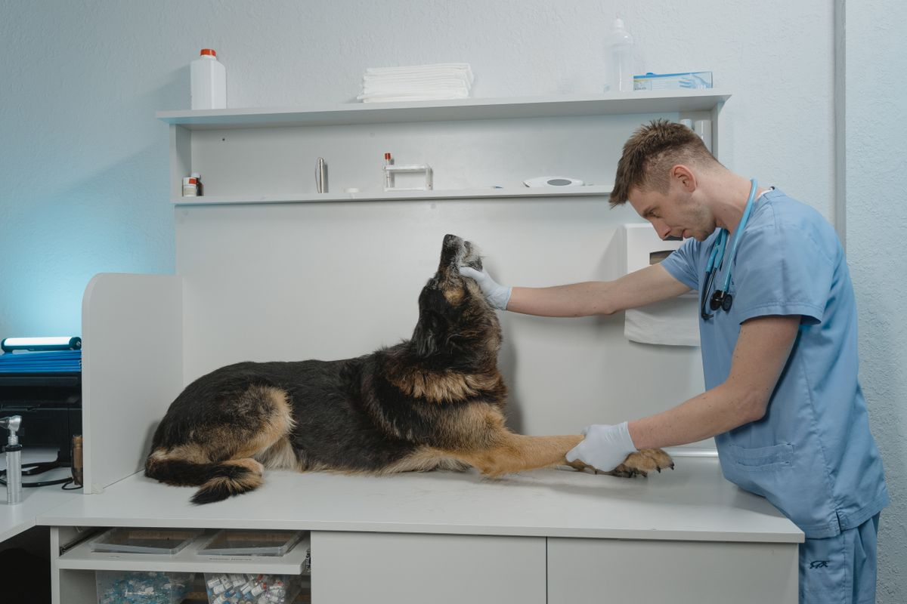
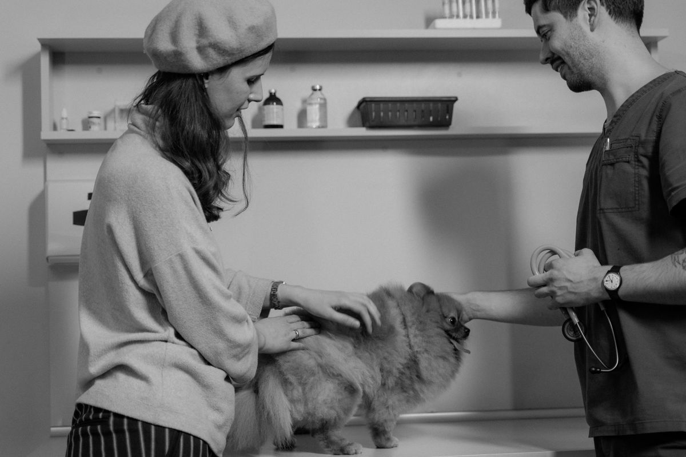
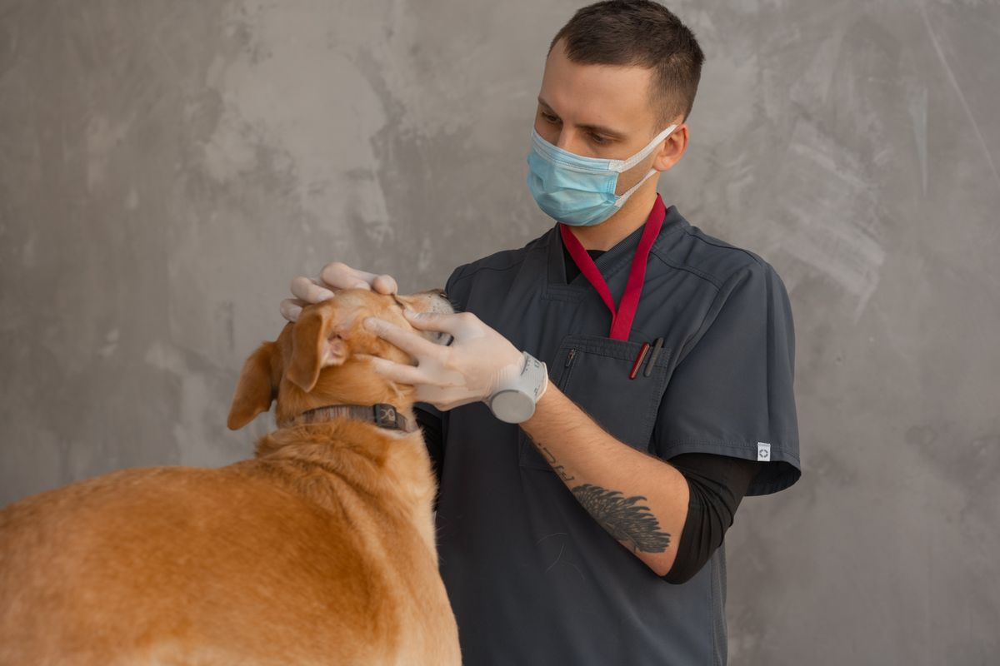

Visit 15th Street Veterinary Group
Walk-in veterinary care in Tulsa since 1965. No appointment needed for exams.
Address: 6231 E 15th St, Tulsa, OK 74112
Hours: Monday to Friday 8:00 AM to 5:00 PM.
Phone: (918) 835-2336
Email: reception@15thstvet.com
Gallery



All gallery photos are stock photos, labeled as such. They show veterinary exams, not this clinic's patients.
Contact
Call (918) 835-2336 Email reception@15thstvet.com
15th Street Veterinary Group serves Tulsa, OK. Questions? Call (918) 835-2336.